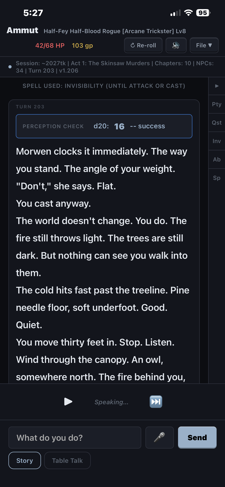
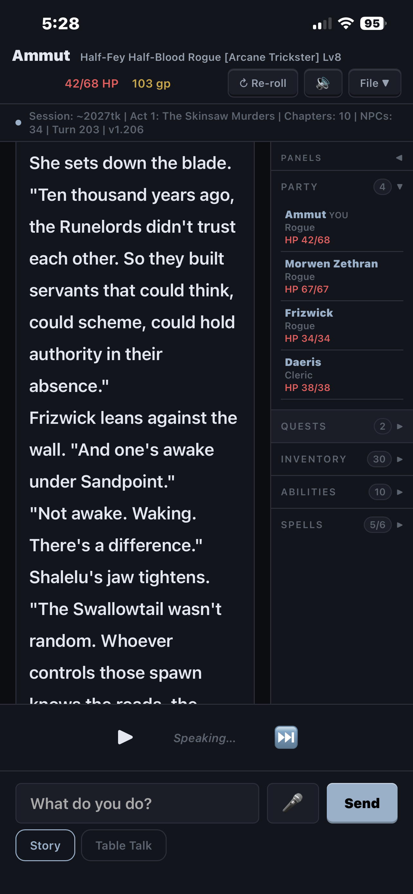

Traffic and Dragons is a sword & sorcery role-playing game that runs entirely in your browser. You create a character, and an AI Game Master narrates a living adventure around you — tracking your health, gold, inventory, quests, and the people you meet, across sessions. There's nothing to install and no account for the game itself; the one thing you must bring is an Anthropic API key, which is what powers the Game Master's brain.
The game works fully with just the Anthropic key. These add extras — you can skip all of them today and add them later:
The game is a proper web app — installed to your home screen it opens fullscreen with its own icon, like any native app.
First launch drops you into a six-step character builder. There are no wrong answers — lean into whatever sounds fun:
| Step | What you're choosing |
|---|---|
| 1 · Tone | The flavor of the whole world — High Fantasy, Gritty, Sword & Sorcery, Dark Horror, Political Intrigue, or write your own. This shapes how the Game Master narrates everything. |
| 2 · Identity | Gender, age, and your ancestry — Human, Elf, Dwarf, Gnome, Half-Blood, Hollow-Born, or Tiefling, each with sub-lineages and their own stat flavor. |
| 3 · Class | Your profession: Warrior, Rogue, Sorcerer, Ranger, Primal, Paladin, Cleric, Druid, or Necromancer. |
| 4 · Attributes | Your six ability scores. Roll (fate decides, auto-arranged sensibly) or Point Buy (you budget 27 points). Plus your moral alignment. |
| 5 · Finishing touches | Appearance, backstory, and a portrait — upload a picture, or (with a fal.ai key) generate one from your character sheet. |
| 6 · Review | Name your campaign, pick a starting location and level (1 is the classic experience), optionally add companions, and confirm. |
Hit confirm and the Game Master opens your story with your first scene. From there:
Two views of the same moment (phone layout — desktop shows a few extra buttons in the top bar). The numbers match the sections below:

1 2 3 4 5 6
4Your vital signs at a glance — name, class & level, HP, gold, alignment, and where you are. When companions travel with you, a party row appears beneath it with each member's health bar. The buttons along the top:
| Button | What it does |
|---|---|
| Sheet | Your full character sheet — stats, portrait, abilities, spells, inventory, skills, relationships, story beats. Everything the game knows about you. |
| Sync | The "fix it yourself" hatch: directly edit HP, gold, inventory, time, weather and more — handy if the story and the numbers ever disagree. |
| World State | Slides out a panel with your location, time, weather, everyone you've met, and your quest journal. |
| Render | Paints the current scene as an image (needs the optional fal.ai key). |
| ↻ Re-roll | Re-narrates the last scene in a different telling — same events, fresh prose, no turn spent. |
| 🔈 | Toggles voice narration on and off. |
| File ▾ | Everything else — see the next section. |
On phones, some of these tuck into the File ▾ menu to save space.
The thin strip under the top bar — Session tokens · Chapters · NPCs · Turn — is the Game Master's memory ticker. As you play, the game periodically pauses a moment to "file memories," compressing recent events into long-term memory. That pause is normal and it's why the GM still remembers the innkeeper's debt forty turns later.
The main scroll — the Game Master's narration, your actions, and dice results, with a turn number over each scene. Under the latest scene you'll find the suggested action buttons. When a fight starts, a combat tracker — the enemy's health bar, armor, and round counter — appears automatically at the top of this area, and vanishes when the dust settles.
The right edge of the screen. Collapsed, it's a slim rail of tabs (Pty · Qst · Inv · Ab · Sp); tap to expand it into full drawers — your Party with everyone's health bars, plus Quests, Inventory, Abilities, and Spells. Everything you'd flip to your character sheet for mid-scene, one tap away.
Appears while narration is being read aloud — ▶ replays the scene, ⏭ skips ahead, and Speaking… tells you the narrator's mid-sentence. (Toggle narration itself with the 🔈 button in the top bar.)
The text box where you say what you do, the 🎤 mic for dictating instead of typing, and Send. Above it, two tabs: Story (the adventure) and Table Talk (out-of-character chat with the GM — a blue dot marks unread replies on the inactive tab).
File ▾ is home to everything that isn't moment-to-moment play. The headliners:
| Item | What it does |
|---|---|
| 📁 Campaigns… | Your saved adventures. Run several at once, switch between them, pull one down from the cloud onto a new device. |
| 🚗 Car Mode | Hands-free play: it reads the scene aloud, listens for your spoken action, and keeps the loop going. Passenger-seat approved. |
| 💾 Save / Load ▶ | Save/Load Game (local) — file-based backups of the whole campaign. Export Character — save your hero as a portable .char file or to your cloud library. Import Character — bring a hero in: play as them in a new campaign, or add them to the current party as a companion. Export as Blueprint — distill your campaign into a reusable template others can play. |
| ☁ Blueprint Library… | Cloud-stored campaign templates — pre-built adventures you can open and start playing immediately. |
| ⚙ Admin ▶ | The settings drawer — details below. |
| ⟳ Clear cache & reload | The universal un-sticker. If the game ever looks stale or weird, this is the button. |
| New Game | Start a fresh character and campaign. Your current one stays safe under Campaigns. |
| Item | What it does |
|---|---|
| 🔊 Voice Settings… | Pick the narration voice; plug in a premium voice key if you have one (built-in voice works without). |
| 📖 Narrative options ▶ | Narrative rules — house rules the GM must always follow ("no spiders," "my dog is immortal"). ✍ Prose inspiration — have the narration channel a favorite author's style. 18+ Adult content — opt into mature language and themes; off by default. |
| 🧠 Language Model… | Swap which AI powers the GM (Claude by default; other providers supported if you bring their keys). |
| 📊 Usage & cost… | Your token meter — exactly what this campaign has spent, per activity, in dollars. |
| 🗂 Episodic memory… | Experimental deeper recall — lets the GM re-read exact past scenes, not just summaries. |
| 🖼 Render Options… | Choose the image model the Render button uses. |
| Toggles & tools | Large text, 🎤 Auto-send voice input (spoken actions send themselves), ☠ Legacy characters (heroes from your past campaigns may wander in as NPCs), 📁 Set campaign folder (desktop: organized export folders), ☁ Connect to server (the GitHub cloud-sync login from step 3). |
| Symptom | Fix |
|---|---|
| Page looks stale or misbehaves after an update | File ▾ → Clear cache & reload. This is the universal fix — try it first. (Or a hard refresh: Ctrl+Shift+R on desktop.) |
| "Invalid API key" or the GM won't respond | Re-check the key was pasted completely (starts sk-ant-), and that your Anthropic account has credits remaining. |
| Images won't render | The fal.ai key is missing or out of credits — check File ▾ → Render Options. |
| Campaign didn't follow you to another device | Cloud sync needs the GitHub connection on both devices — File ▾ → Connect server on each. |
| Something else / it ate your character | Tell us! That's exactly what the beta is for. Note what you did, what you expected, and what happened instead — a screenshot helps enormously. |